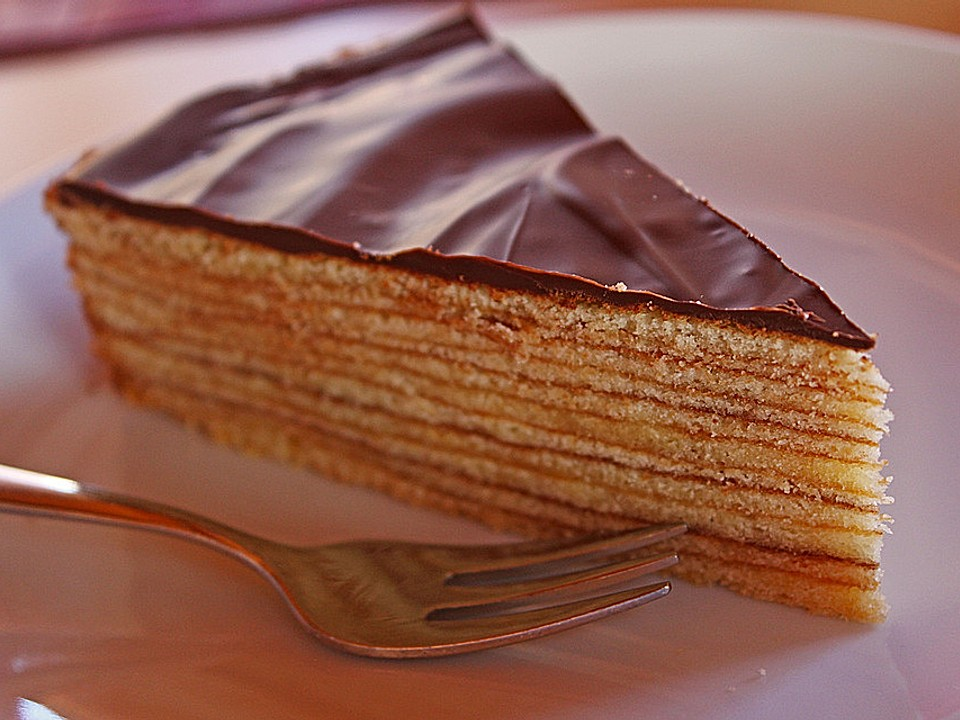

Baumkuchen
The recipe is referencing from
this website
.

A true Swiss Baumkuchen is almost impossible to make at home. It requires a rotating spit, and almost a gallon of batter, and loads of time. This is a smaller version, although it too takes time. The results taste a little like a Kit-Kat bar. The many layers will remind you of the famous Dobostorte.
Ingredients
- ⅞ cup unsalted butter, softened
- 1 cup sifted confectioners' sugar
- ⅞ cup cornstarch
- 5 ½ ounces almond paste
- 1 ½ teaspoons vanilla extract
- 1 pinch salt
- 2 egg yolks
- 6 egg whites
- ¾ cup white sugar
- ¾ cup all-purpose flour
- 9 (1 ounce) squares semisweet chocolate
- 2 ½ teaspoons vegetable oil
Steps
- Butter a 9 inch square metal pan. Place a sheet of parchment paper in the bottom. Butter the parchment, and flour the whole pan. Position the rack of the oven to the lowest level, and preheat the broiler.
- In a large bowl, cream the butter or margarine until light and fluffy. Add in the almond paste in small chunks; beat until smooth. Add the confectioners' sugar, cornstarch, vanilla, and salt. Beat in the yolks one at a time, beating well after each addition. Beat until smooth.
- In another bowl, beat the egg whites to soft peaks. Add in the sugar slowly while continuing to beat the meringue to stiff, glossy peaks. Fold the meringue into the yolk mixture. Sift the flour over this, and fold in.
- Spoon a small amount of batter onto the parchment in the baking pan. With a pastry brush, paint the batter on. You want to cover the paper completely, but have a thin layer. Place under the broiler, and cook until light brown; this should take about 1 to 2 minutes. Brush another layer of the batter over the cake, and place under the broiler. Continue on in this way until all of the batter is used. Cool completely. Turn the cake out of the pan, and trim the edges clean.
- In a double boiler, combine the chocolate and the oil. Heat until the chocolate is smooth. With a pastry brush, brush one side of the trimmed cake with some chocolate. Don't make it too thick. Allow this to harden. Turn the cake over, and brush the other side. Allow the cake to set. Cut the cake into 6 narrow strips, each about 1-1/2 inches wide. Brush the sides and top with the glaze, and allow to set. Store in the refrigerator, but serve at room temperature.
Back to Homepage